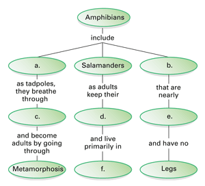
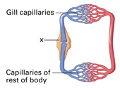
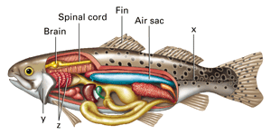

Reviewing Concepts
Multiple Choice
Choose the letter of the best answer.
1. In addition to a notochord, which of the following is also a characteristic of all chordate embryos?
a. vertebrae
b. exoskeleton
c. pharyngeal slits
d. hinged jaw
2. All of the following are tetrapods except
a. mammals.
b. fishes.
c. reptiles.
d. amphibians.
3. Which of the following is an example of an invertebrate chordate?
a. lancelet
b. shark
c. salamander
d. toad
4. The function of the operculum in fishes is
a. to pump water through gills.
b. to maneuver while swimming.
c. to control buoyancy.
d. to sense vibrations in the water.
5. The type of fishes thought to be most closely related to the ancestors of amphibians are
a. lampreys.
b. ray-finned fishes.
c. lungfishes.
d. rays.
6. Based on fossil evidence, the first vertebrates that lived on land were
a. lobe-finned fishes.
b. amphibians.
c. cartilaginous fishes.
d. ray-finned fishes.
7. A vertebrate with a three-chambered heart, external eardrums, strong hind legs, and smooth, moist skin is most likely a
a. shark.
b. lungfish.
c. caecilian.
d. frog.
8. Which animal breathes through gills early in its life and through lungs as an adult?
a. ray-finned fish
b. shark
c. frog
d. lamprey
Short Answer
9. Describe the four distinguishing features of all chordate embryos.
10. Give one example of a vertebrate without a hinged jaw, and one example of a vertebrate with a hinged jaw.
11. Identify general characteristics of most vertebrates.
12. Explain the differences between a bony and a cartilaginous skeleton.
13. Describe the function of a swim bladder.
14. Describe the distinguishing physical characteristics of ray-finned fishes.
15. Describe the body structure and habitat of the earliest tetrapods.
16. Explain why amphibians must lay their eggs in a moist environment.
17. Summarize the life cycle of a typical frog.
Visualizing Concepts
18. On a separate sheet of paper, copy and complete the concept map below summarizing information about amphibians.

Applying Concepts
Analyzing Information
19. Analyzing Diagrams The diagram below illustrates the circulatory system of fishes.

a. Describe the direction of blood flow starting at the gill capillaries.
b. What is the structure labeled x? What is this structure's function?
c. Is this an example of an open or closed circulatory system? Explain.
20. Analyzing Diagrams The diagram below illustrates the anatomy of a bony fish.

a. What does structure x enable the fish to do? Explain.
b. How does the air sac function in fishes?
c. Identify two structures that enable the fish to move in water.
d. How does structure y function with the structures labeled z?
Critical Thinking
21. Relating Cause and Effect A certain pond is found to contain bacteria that cause gill disease. Explain how over time these bacteria might affect the population of frogs that live near the pond.
22. Comparing and Contrasting Compare the single-circuit circulatory system of fishes with the double-circuit system of amphibians.
23. Making Generalizations In what ways are most amphibians adapted to a terrestrial life? In what ways are they adapted to an aquatic life?
24. Comparing and Contrasting In what ways are humans similar to lancelets? What are some common characteristics they share?
25. What's Wrong With These Statements?
Briefly explain why each statement is inaccurate or misleading.
a. All chordates have a backbone.
b. A hinged jaw is characteristic of all vertebrates.
c. All amphibians spend part of their life cycle in water.
d. Most vertebrates are tetrapods.
e. Fishes do not need oxygen.
Performance Assessment
Biology Research Project Some people are very concerned about shark attacks on humans. Based on what you have learned about sharks, write a statement about whether you think sharks pose a significant danger to people. Then use your library or the Internet to research the facts about shark attacks on humans over a 20-year period. Based on your research, revise your conclusion.